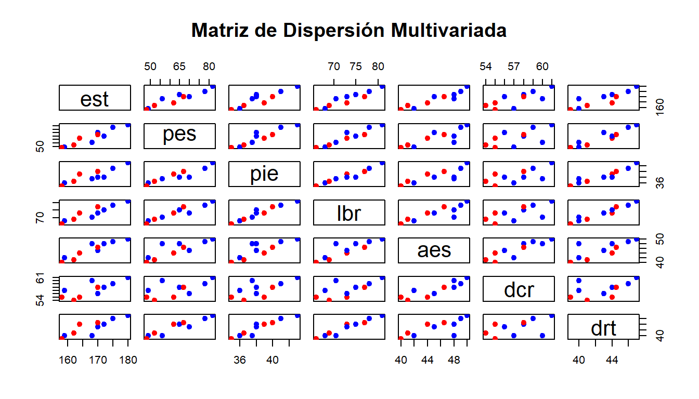
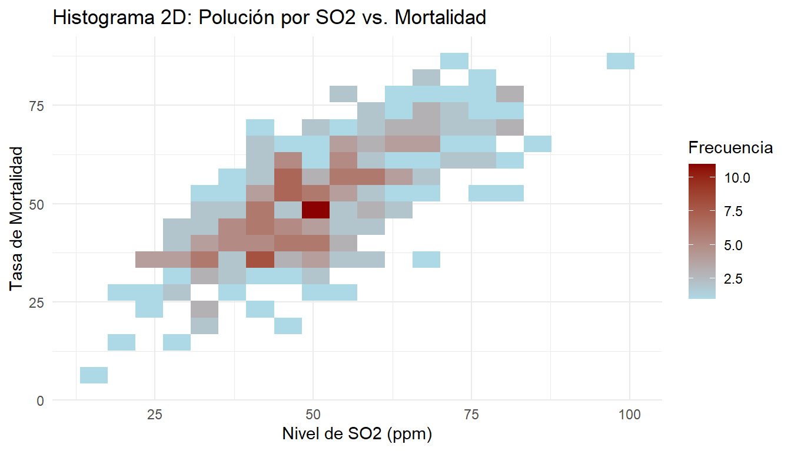
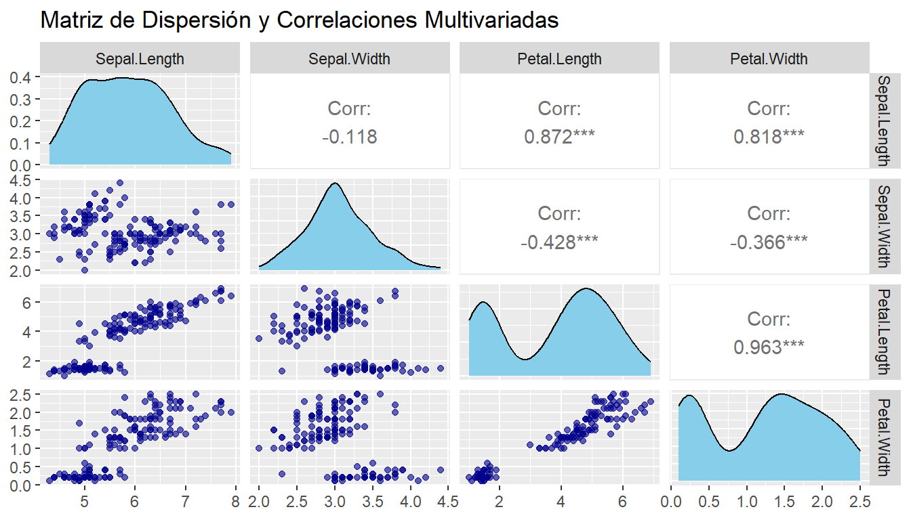
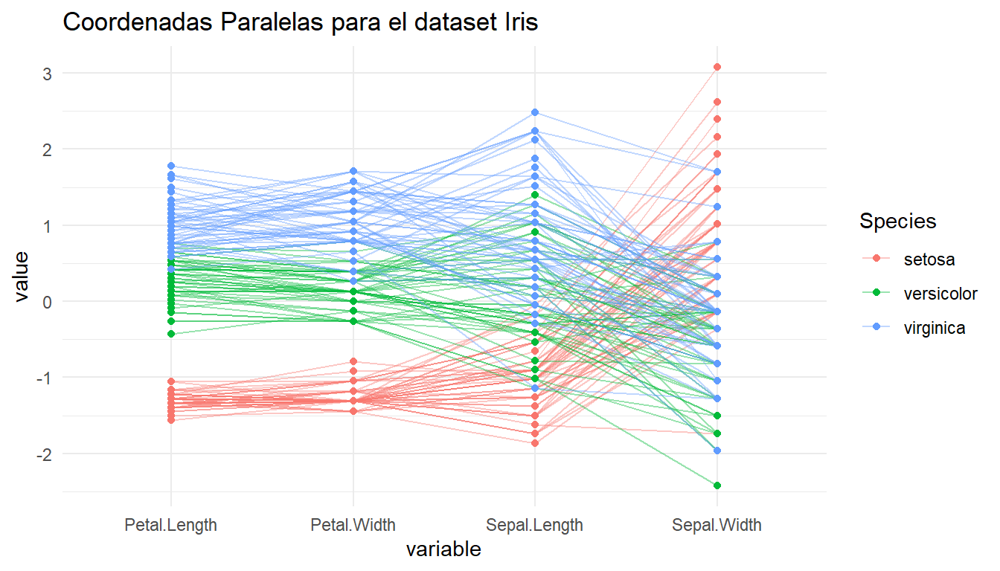
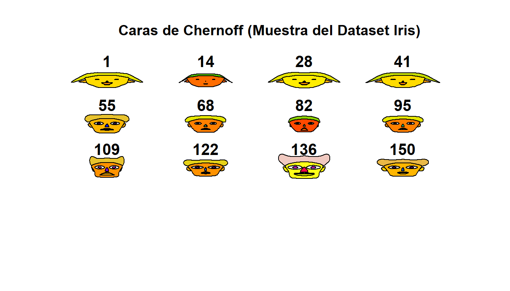
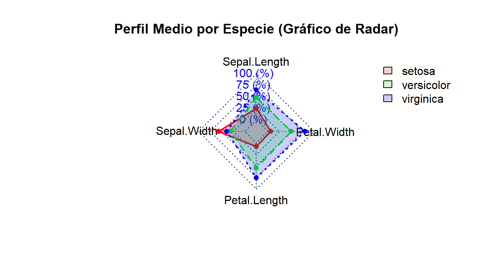
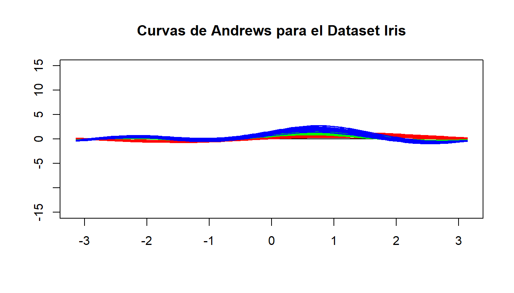

Capítulo 1 Análisis descriptivo
1.1 Algo de historia
Los métodos estadísticos multivariados, en su forma más simple, hacen referencia al análisis simultáneo de dos o más variables aleatorias.
El primer método para medir la relación estadística entre dos variables se debe a Francis Galton (1822-1911), que introduce el concepto de recta de regresión y la idea de correlación entre variables en su libro Natural Inheritance, publicado en 1889 cuando Galton tenía 67 años. Estos descubrimientos surgen en sus investigaciones sobre la transmisión de los rasgos hereditarios, motivadas por su interés en contrastar empíricamente la teoría de la evolución de las especies, propuesta por su primo Charles Darwin en 1859.
El concepto de correlación es aplicado en las ciencias sociales por Francis Edgeworth (1845-1926), que estudia la normal multivariada y la matriz de correlación. Karl Pearson (1857-1936), un distinguido estadístico británico creador de la famosa \(\chi^2\) de Pearson, obtuvo el estimador del coeficiente de correlación muestral, y se enfrentó al problema de determinar si dos grupos de personas, de los que se conocen sus medidas físicas, pertenecen a la misma raza (problema simple de discriminación de poblaciones).
Este problema intrigó a Harold Hotelling (1885-1973), un joven matemático y economista estadounidense, que, atraído por la Estadística, entonces una joven disciplina emergente, viaja en 1929 a la estación de investigación agrícola de Rothamsted en el Reino Unido para trabajar con el ya célebre científico y figura destacada de la estadística, R. A. Fisher (1890-1962). Hotelling se interesó por el problema de comparar tratamientos agrícolas en función de varias variables, y descubrió las semejanzas entre este problema y el planteado por Pearson. Debemos a Hotelling (1931) el contraste que lleva su nombre (\(T^2\) de Hotelling), que permite comparar si dos muestras multivariadas provienen de la misma población.
A su regreso a la Universidad de Columbia en Nueva York, Truman Kelley, profesor de pedagogía en Harvard, planteó a Hotelling el problema de encontrar los factores capaces de explicar los resultados obtenidos por un grupo de personas en pruebas (test) de inteligencia.
Hotelling (1933) inventó los componentes principales, que son indicadores capaces de resumir de forma óptima un conjunto amplio de variables y que dan lugar, posteriormente, al análisis factorial. El problema de obtener el mejor indicador resumen de un conjunto de variables había sido abordado y resuelto desde otro punto de vista por Karl Pearson en 1901, en su trabajo para encontrar el plano de mejor ajuste a un conjunto de observaciones astronómicas. Posteriormente, Hotelling generaliza la idea de componentes principales introduciendo el análisis de correlación canónica, que permite resumir simultáneamente dos conjuntos de variables.
El problema de encontrar factores que expliquen los datos fue planteado por primera vez por Charles Spearman (1863–1945), que observó que los niños que obtenían buenas puntuaciones en un test de habilidad mental también las obtenían en otros, lo que le llevó a postular que se debían a un factor general de inteligencia, el factor g (Spearman, 1904). L. Thurstone (1887–1955) estudió el modelo con varios factores y escribió uno de los primeros textos de análisis factorial (Thurstone, 1947). El análisis factorial fue considerado hasta los años 60 como una técnica psicométrica con poca base estadística, hasta que los trabajos de Lawley y Maxwell (1971) establecieron formalmente la estimación y el contraste del modelo factorial bajo la hipótesis de normalidad. Desde entonces, las aplicaciones del modelo factorial se han extendido a todas las ciencias sociales. La generalización del modelo factorial cuando tenemos dos conjuntos de variables y unas explican la evolución de las otras es el modelo de ecuaciones estructurales, que ha sido ampliamente estudiado por Jöreskog (1973), entre otros.
La primera solución al problema de clasificación se debe a Fisher en 1936. Fisher inventa un método general, basado en el análisis de la varianza, para resolver un problema de discriminación de cráneos en antropología. El problema era clasificar un cráneo encontrado en una excavación arqueológica como perteneciente o no a un homínido (término que se utiliza para nombrar al ejemplar que pertenece al orden de los primates superiores, que tienen al ser humano (Homo sapiens) como la única especie que sobrevive). La idea de Fisher es encontrar una variable indicadora, combinación lineal de las variables originales de las medidas del cráneo, que consiga máxima separación entre las dos poblaciones en consideración.
En 1937 Fisher visita la India invitado por P. C. Mahalanobis (1893–1972), que había inventado la medida de distancia que lleva su nombre, para investigar las diferentes razas en la India. Fisher percibe enseguida la relación entre la medida (distancia) de Mahalanobis y sus resultados en análisis discriminante y ambos consiguen unificar estas ideas y relacionarlas con los resultados de Hotelling sobre el contraste de medias de poblaciones multivariadas. Unos años después, un estudiante de Mahalanobis, C. R. Rao, va a extender el análisis de Fisher para clasificar un elemento en más de dos poblaciones.
Las ideas anteriores se desarrollan para variables cuantitativas (numéricas), pero se aplican poco después a variables cualitativas o atributos (categóricas). Karl Pearson había introducido el estadístico que lleva su nombre para contrastar la independencia en una tabla de contingencia y Fisher, en 1940, aplica sus ideas de análisis discriminante a estas tablas. Paralelamente, Guttman (1916–1987), en Psicometría, presenta un procedimiento para asignar valores numéricos (construir escalas) a variables cualitativas que está muy relacionado con el método de Fisher. Como este último trabaja en Biometría, mientras Guttman lo hace en Psicometría, la conexión entre sus ideas tardó más de dos décadas en establecerse.
En Ecología, Hill (1973) introduce un método para cuantificar variables cualitativas que está muy relacionado con los enfoques anteriores. En los años 60 en Francia un grupo de estadísticos y lingüistas estudian tablas de asociación entre textos literarios y J. P. Benzécri inventa el análisis de correspondencias con un enfoque geométrico que generaliza, y establece un marco común, para muchos de los resultados anteriores. Benzécri visita la Universidad de Princeton y los laboratorios Bell donde Carroll y Shepard están desarrollando los métodos de escalamiento multidimensional para analizar datos cualitativos, que habían sido iniciados en el campo de la Psicometría por Torgerson (1958). A su vuelta a Francia, Benzécri funda en 1965 el Departamento de Estadística de la Universidad de París y publica en 1972 sus métodos de análisis de datos cualitativos mediante análisis de correspondencias.
La aparición de la computadora transforma radicalmente los métodos de análisis multivariado que experimentan un gran crecimiento desde los años 70. En el campo descriptivo, las computadoras hacen posible la aplicación de métodos de clasificación de observaciones (análisis de conglomerados o análisis de clusters) que se basan cada vez más en un uso extensivo de la computadora. MacQueen (1967) introduce el algoritmo de \(k\)-medias. El primer ajuste de una mezcla de distribuciones fue realizado por el método de momentos por K. Pearson y el primer algoritmo de estimación multivariada se debe a Wolfe (1970).
Por otro lado, en el campo de la inferencia, la computadora permite la estimación de modelos sofisticados de mezclas de distribuciones para clasificación, tanto desde el punto de vista clásico, mediante nuevos algoritmos de estimación de variables latentes, como el algoritmo EM, debido a Dempster, Laird y Rubin (1977), como desde el punto de vista Bayesiano, con los métodos modernos de simulación de cadenas de Markov, o métodos MCMC (Markov Chain Monte Carlo).
En los últimos años, los métodos multivariados están sufriendo una transformación en dos direcciones: en primer lugar, las grandes masas de datos disponibles en algunas aplicaciones están conduciendo al desarrollo de métodos de aproximación local, que no requieren hipótesis generales sobre el conjunto de observaciones. Este enfoque permite construir indicadores no lineales, que resumen la información por segmentos en lugar de intentar una aproximación general. En el análisis de grupos, este enfoque local está obteniendo también ventajas apreciables.
La segunda dirección prescinde de las hipótesis sobre las distribuciones de los datos y cuantifica la incertidumbre mediante métodos de computación intensiva. Es de esperarse que las crecientes posibilidades de cálculo proporcionadas por las computadoras actuales amplíen el campo de aplicación de estos métodos a problemas más complejos y generales.
1.2 Introducción a los Datos Multivariados
Los datos multivariados se presentan cuando el investigador recaba varias variables sobre cada ‘’unidad’’ en su muestra. La mayoría de los conjuntos de datos que se colectan para una investigación son multivariados. Aunque algunas veces tiene sentido estudiar por separado cada una de las variables, en la mayoría de los casos no. En el común de las situaciones, las variables están relacionadas de tal manera que si se analizan por separado, no se revela la estructura completa de los datos.
En la gran mayoría de los conjuntos de datos multivariados, todas las variables necesitan analizarse de manera simultánea para descubrir patrones y características esenciales de la información que contienen. El análisis multivariado incluye métodos que son totalmente descriptivos y otros que son inferenciales. El objetivo principal es revelar la estructura de los datos, eliminando el ‘’ruido’’ de los mismos.
Un aspecto muy importante a considerar en los datos multivariados, es que, por lo general, las variables pueden ser tanto cualitativas como cuantitativas y que tienen diferentes escalas de medición, hecho que se debe considerar al momento de realizar el análisis estadístico.
Algunos ejemplos de variables multivariantes son los siguientes:
En cada estudiante de una universidad medimos la edad, el sexo, la nota de entrada en la universidad, el municipio de residencia y el curso más alto en que se encuentra matriculado.
En cada una de las empresas de un polígono industrial medimos el número de trabajadores, la facturación, el sector industrial y las ayudas oficiales recibidas.
En cada país del mundo medimos diez indicadores de desarrollo.
Supondremos en adelante que las variables definidas sobre cada elemento de la población son numéricas. En particular, cualquier variable cualitativa se transformará a una escala numérica. Por ejemplo, la variable sexo se convierte en numérica asignando el cero al hombre y el uno a mujer. Naturalmente la asignación de valores numéricos es arbitraria.
Entonces podemos suponer que los valores disponibles de la variable multidimensional se encuentran en una matriz, que llamaremos matriz de datos. En esta matriz cada fila representa un elemento de la población y cada columna los valores de una variable escalar en todos los elementos observados. Típicamente esta matriz será rectangular con \(n\) filas y \(p\) columnas donde hemos supuesto que existen \(n\) elementos en la población y que se han medido \(p\) variables sobre cada elemento.
1.3 Estructura Matricial de los Datos
Sea un conjunto de datos con \(n\) observaciones e individuo \(j\) (\(j=1, \dots, n\)), y \(p\) variables medidas en cada uno (\(k=1, \dots, p\)). La matriz de datos \(\mathbf{X}_{n \times p}\) se define como:
\[\begin{equation} \mathbf{X} = \begin{bmatrix} x_{11} & x_{12} & \dots & x_{1p} \\ x_{21} & x_{22} & \dots & x_{2p} \\ \vdots & \vdots & \ddots & \vdots \\ x_{n1} & x_{n2} & \dots & x_{np} \end{bmatrix} = \begin{bmatrix} \mathbf{x}_1' \\ \mathbf{x}_2' \\ \vdots \\ \mathbf{x}_n' \end{bmatrix} \end{equation}\]
donde \(\mathbf{x}_j'\) representa el vector fila \(1 \times p\) con las mediciones sobre el \(j\)-ésimo individuo.
1.3.1 Vector de Medias Muestrales
El vector de medias muestral \(\bar{\mathbf{x}}\) combina la media aritmética de cada variable: \[\begin{equation} \bar{\mathbf{x}} = \begin{bmatrix} \bar{x}_1 \\ \bar{x}_2 \\ \vdots \\ \bar{x}_p \end{bmatrix}, \quad \text{donde} \quad \bar{x}_k = \frac{1}{n}\sum_{j=1}^n x_{jk} \end{equation}\]
1.3.2 Matriz de Varianza-Covarianza Muestral
La matriz de varianzas y covarianzas \(\mathbf{S}\) de dimensión \(p \times p\) se define por: \[\begin{equation} \mathbf{S} = \begin{bmatrix} s_{11}^2 & s_{12} & \dots & s_{1p} \\ s_{21} & s_{22}^2 & \dots & s_{2p} \\ \vdots & \vdots & \ddots & \vdots \\ s_{p1} & s_{p2} & \dots & s_{pp}^2 \end{bmatrix} \end{equation}\] donde la covarianza entre la variable \(i\) y la variable \(k\) es: \[\begin{equation} s_{ik} = \frac{1}{n-1}\sum_{j=1}^n (x_{ji} - \bar{x}_i)(x_{jk} - \bar{x}_k) \end{equation}\]
1.3.3 Matriz de Correlación Muestral
La matriz de correlaciones \(\mathbf{R}\) escala las covarianzas entre \(-1\) y \(1\): \[\begin{equation} \mathbf{R} = \begin{bmatrix} 1 & r_{12} & \dots & r_{1p} \\ r_{21} & 1 & \dots & r_{2p} \\ \vdots & \vdots & \ddots & \vdots \\ r_{p1} & r_{p2} & \dots & 1 \end{bmatrix}, \quad \text{donde} \quad r_{ik} = \frac{s_{ik}}{\sqrt{s_{ii} s_{kk}}} \end{equation}\]
1.3.4 Ejemplo
A continuación, analizamos las ocho variables físicas medidas en un grupo de estudiantes (datos tomados de D. Peña, 2001). Las variables son: sexo (sex), estatura (est), peso (pes), longitud de pie (pie), longitud de brazo (lbr), anchura de espalda (aes), diámetro de cráneo (dcr) y distancia rodilla-tobillo (drt).
--- MATRIZ DE DATOS (Muestra) --- sex est pes pie lbr aes dcr drt
1 0 159 49 36.0 68.0 42.0 57 40.0
2 1 164 62 39.0 73.0 44.0 55 44.0
3 0 172 65 38.0 75.0 48.0 58 44.0
4 0 170 70 38.0 73.0 45.0 56 43.0
5 1 170 67 40.0 77.0 46.5 58 44.5
6 0 168 56 37.5 70.5 48.0 60 40.0--- RESUMEN DE ESTADÍSTICOS DESCRIPTIVOS --- est pes pie lbr aes dcr drt
Medias 167.80 62.90 38.40 73.00 45.40 57.30 42.9
D. Típicas 7.10 11.80 2.40 4.80 3.50 2.30 2.7
Coef. asimetría 0.16 0.28 0.57 0.17 -0.28 0.15 0.0
Coef. Curtosis 2.30 2.00 3.00 2.10 1.60 1.90 1.7--- MATRIZ DE CORRELACIÓN (R) --- est pes pie lbr aes dcr drt
est 1.00 0.95 0.90 0.94 0.93 0.77 0.87
pes 0.95 1.00 0.94 0.96 0.83 0.61 0.94
pie 0.90 0.94 1.00 0.97 0.82 0.67 0.94
lbr 0.94 0.96 0.97 1.00 0.86 0.67 0.97
aes 0.93 0.83 0.82 0.86 1.00 0.88 0.75
dcr 0.77 0.61 0.67 0.67 0.88 1.00 0.49
drt 0.87 0.94 0.94 0.97 0.75 0.49 1.00
1.4 Descripciones Gráficas Multivariadas
Además de las representaciones univariantes tradicionales, es conveniente representar los datos multivariantes conjuntamente. Para variables discretas podemos construir diagramas de barras tridimensionales, pero no es posible extender la analogía a más dimensiones. Igualmente, podemos construir los equivalentes multidimensionales de los histogramas, pero estas representaciones no son útiles para dimensiones superiores a tres.
Entre las herramientas gráficas principales para explorar datos multivariados destacan:
- Matrices de Dispersión (Scatterplot Matrices): Gráficos cruzados de pares de variables.
- Diagramas de Estrellas (Star Plots): Representación radial de las variables para cada individuo.
- Caras de Chernoff: Asignación de variables a facciones del rostro humano.
- Curvas de Andrews: Transformación del vector de observaciones en funciones trigonométricas continuas \(f_{\mathbf{x}}(t)\) en el intervalo \([-\pi, \pi]\).
1.4.1 Equivalente Multidimensional de Histogramas (Heatmap / Densidad 2D)
Cuando tenemos dos variables continuas, el equivalente a un histograma es una superficie de densidad o un gráfico de calor por casilleros (binning 2D).

1.4.2 Gráfico de Dispersión 3D Interactivo
Permite visualizar tres variables continuas simultáneamente en un espacio tridimensional.
1.4.3 Matriz de Dispersión (Pairs Plot / GGpairs)
Es la herramienta estándar para visualizar múltiples variables de dos en dos, incluyendo distribuciones univariantes y coeficientes de correlación.

1.4.4 Gráfico de Coordenadas Paralelas
Representa cada observación (\(n\)) como una línea continua que atraviesa los ejes verticales paralelos correspondientes a cada variable (\(p\)).Fragmento de código

1.4.5 Caras de Chernoff
Técnica icónica para datos multivariados donde los rasgos faciales (ojos, boca, forma del rostro) representan los valores de las variables cuantitativas de cada observación.

effect of variables:
modified item Var
"height of face " "Sepal.Length"
"width of face " "Sepal.Width"
"structure of face" "Petal.Length"
"height of mouth " "Petal.Width"
"width of mouth " "Sepal.Length"
"smiling " "Sepal.Width"
"height of eyes " "Petal.Length"
"width of eyes " "Petal.Width"
"height of hair " "Sepal.Length"
"width of hair " "Sepal.Width"
"style of hair " "Petal.Length"
"height of nose " "Petal.Width"
"width of nose " "Sepal.Length"
"width of ear " "Sepal.Width"
"height of ear " "Petal.Length"1.4.6 Gráfico de Radar / Telaraña (Spider Plot)
Útil para comparar perfiles multivariados o los centros de masa (medias) de diferentes grupos.

1.4.7 Curvas de Andrews
Son una herramienta gráfica multivariada inventada por David F. Andrews (1972). Su idea fundamental es transformar cada observación multivariada \(p\)-dimensional \(\mathbf{x}_i = (x_{i1}, x_{i2}, \dots, x_{ip})^t\) en una función fourier continua \(f_i(t)\) en el intervalo \(t \in [-\pi, \pi]\):\[f_i(t) = \frac{x_{i1}}{\sqrt{2}} + x_{i2}\sin(t) + x_{i3}\cos(t) + x_{i4}\sin(2t) + x_{i5}\cos(2t) + \dots\]De esta forma, cada punto u observación en un espacio \(p\)-dimensional se representa como una curva suave bidimensional definida en el intervalo \(t \in [-\pi, \pi]\).
La trasformación preserva las distancias, aa distancia \(L_2\) entre dos curvas es proporcional a la distancia euclídea entre los puntos multivariados originales, por lo tanto las observaciones que están cerca en el espacio multivariado tendrán curvas muy similares, lo que facilita detectar clusters (agrupamientos) y valores atípicos (outliers).
